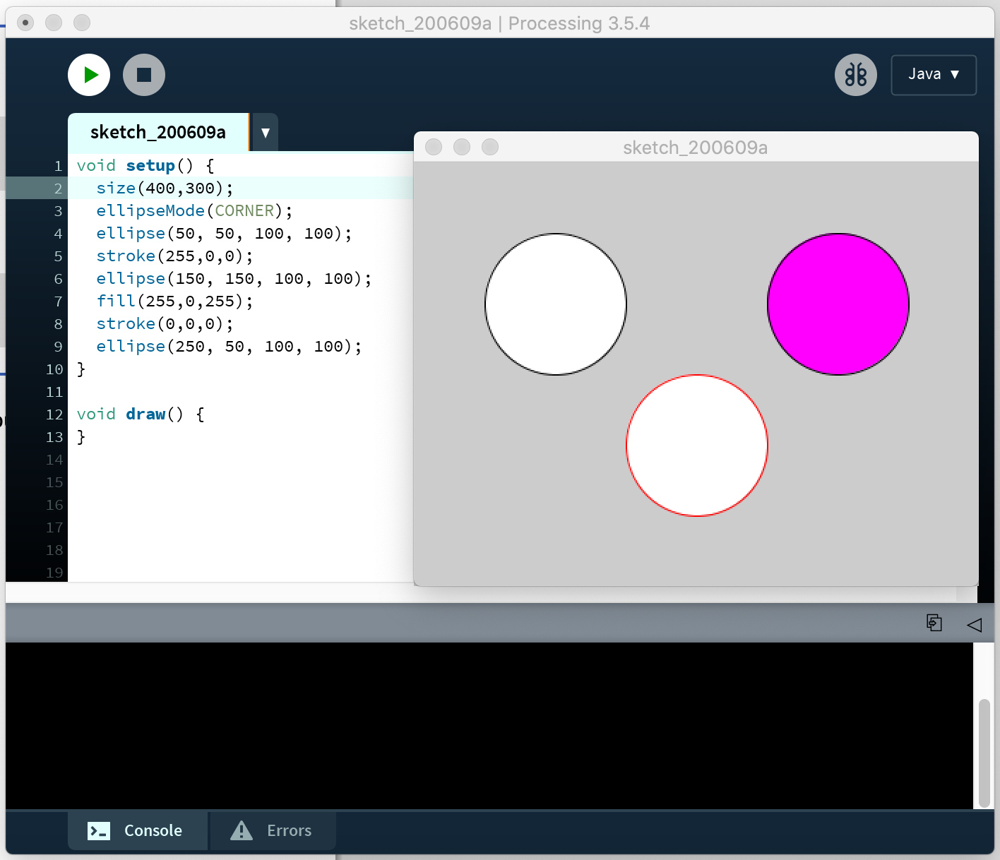
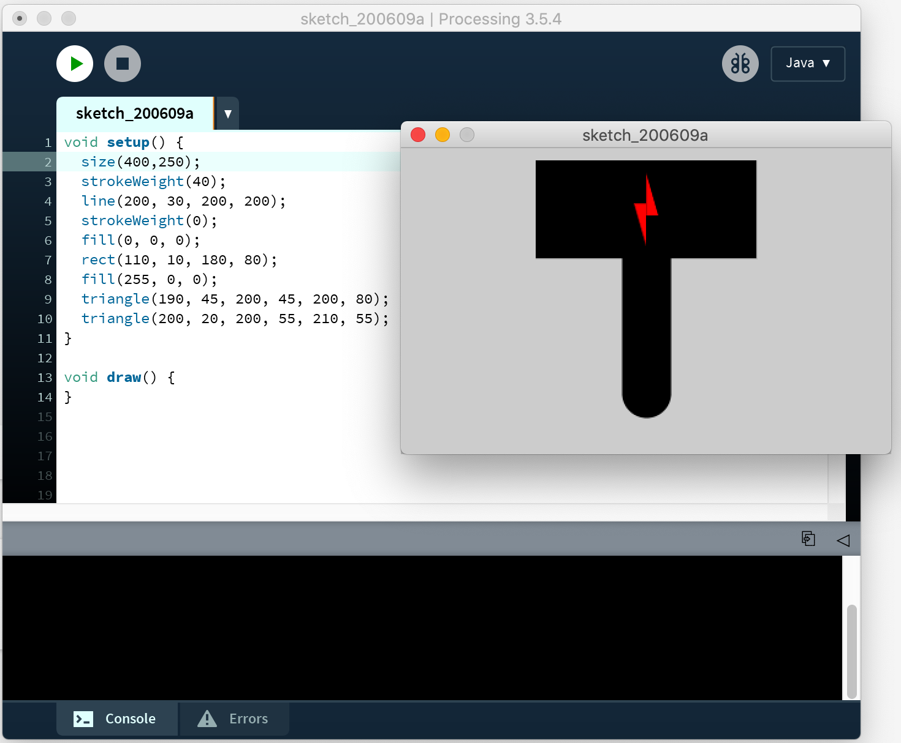
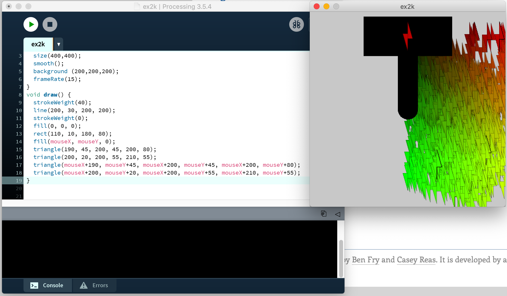
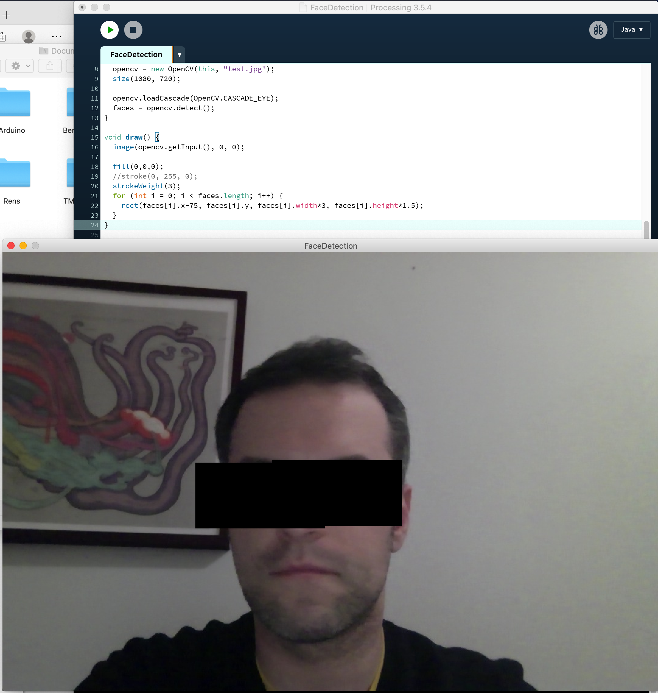
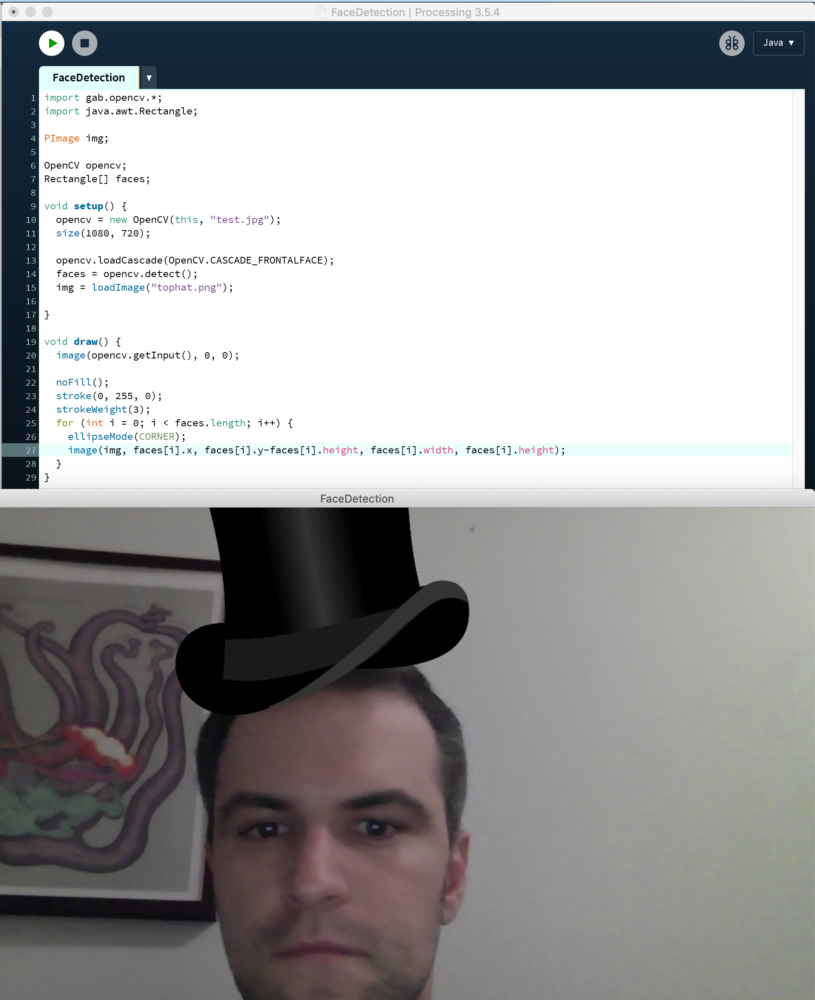

Assignment 2F: Your First Program
⇑

Assignment 2I: Your Second Program
⇑

Assignment 2O: Interactive Shapes
⇑

Assignment 3B: Criminal Intent
⇑

Assignment 3D: Top Hats
⇑

Assignment 4B: Processing to Arduino
⇑I think a description would work better here to describe what I did, and add the code for both processing and arduino separately.
I wanted to make an automatic door opener; if processing recognises a face, it sends the proper command to the servo, which turns to open a door (hypothetically). If processing no longer recognises a face, it closes the hypothetical door (after 5 seconds).
×
#include <Servo.h>
// Read data from the serial and turn ON or OFF a light depending on the
char val; // Data received from the serial port
int ledPin = 13; // Set the pin to digital I/O 4
Servo rServo; // Declare servo object for the right servo
int servoR = 9; // Var for the pin the right servo connects to
int posR = 90; // Var to keep track of the right servo's position
rServo.attach(servoR); // Tell the servo to what pin it's connected to
void setup() {
pinMode(ledPin, OUTPUT); // Set pin as OUTPUT
Serial.begin(9600); // Start serial communication at 9600 bps
}
void loop() {
while (Serial.available()) { // If data is available to read,
val = Serial.read(); // read it and store it in val
}
if (val == 'f') { // If f was received
rServo.write(180); // turn the servo
} else {
rServo.write(90); // turn the servo back to its original position
}
delay(5000); // Wait 5000 milliseconds for next reading
}
×
Serial myPort; // Create object from Serial class
int val; // Data received from the serial port
OpenCV opencv;
Rectangle[] faces;
void setup() {
opencv = new OpenCV(this, "test.jpg");
size(1080, 720);
opencv.loadCascade(OpenCV.CASCADE_FRONTALFACE);
faces = opencv.detect();
String portName = Serial.list()[0]; //adjust 0 to the port your Arduino is connected to
myPort = new Serial(this, portName, 9600);
}
void draw() {
image(opencv.getInput(), 0, 0);
noFill();
stroke(0, 255, 0);
strokeWeight(3);
for (int i = 0; i < faces.length; i++) {
rect(faces[i].x, faces[i].y, faces[i].width, faces[i].height);
if (faces.length> 0) {
myPort.write('f');
} else {
myPort.write('n');
}
}
}